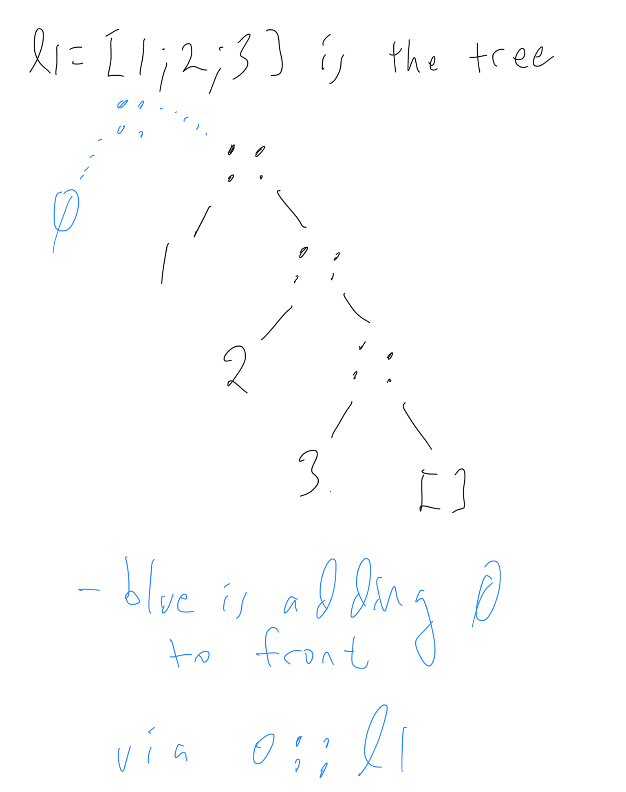

Introduction to OCaml Programming
- We will be using the OCaml language for implementing interpreters, typecheckers and the like
- You are not going to learn how to be an OCaml software engineer in this class however, we are just going to cover the minimal OCaml needed for these tasks
- Take Functional Programming in Software Engineering for a focus on broader uses of OCaml
- OCaml itself has a very minimal set of features which can build up other features, we will also follow that in our toy langauges Fb, FbV, FbR, etc.
What is OCaml?
- OCaml is a strongly typed functional programming language
- Strongly typed means the compiler will detect type errors; you won’t get them at runtime like in JavaScript/Python
- Functional means an emphasis on functions as a key building block and use of functions as data (functions that themselves can take functions as arguments and return functions as results)
The top loop
- We will begin exploration of OCaml in the interactive top loop
- A top loop is also called a read-eval-print loop or the console window for other languages; it also works like a terminal shell
- To install the top loop we are using,
utop, follow the course OCaml install instructions. - To run it, just type
utopinto a terminal window.
Simple integer operations in the top loop
(Note if you want to get all the code (only) of this webpage in a .ml file to load into your editor, download the file lecture.ml.)
3 + 4;; (* ";;" denotes end of input, somewhat archaic. *)
let x = 3 + 4;; (* give the value a name via let keyword. *)
let y = x + 5;; (* can use x now *)
let z = x + 5 in z - 1;; (* let .. in defines a local variable z *)
Boolean operations
let b = true;;
b && false;;
true || false;;
1 = 2;; (* = not == for equality comparison - ! *)
1 <> 2;; (* <> not != for not equal *)
Other basic data – see documentation for details
4.5;; (* floats *)
4.5 +. 4.3;; (* operations are +. etc not just + which is for ints only *)
30980314323422L;; (* 64-bit integers *)
'c';; (* characters *)
"and of course strings";;
Simple functions on integers
To declare a function squared with x its one parameter. return is implicit.
let squared x = x * x;;
squared 4;; (* to call a function -- separate arguments with S P A C E S *)
- OCaml has no
returnstatement; value of the whole body-expression is what gets returned - Type is automatically inferred and printed as domain
->range - OCaml functions in fact always take only one argument - ! multiple arguments can be encoded (later)
Everything in OCaml returns values (i.e. is an ‘expression’) - no commands
if (x = 3) then (5 + 35) else 6;; (* ((x==3)?5:6)+1 in C *)
(if (x = 3) then 5 else 6) * 2;;
(* (if (x = 3) then 5.4 else 6) * 2;; *) (* type errors: two branches of if must have same type *)
Fibonacci series example - 0 1 1 2 3 5 8 13 ...
Let’s write a well-known function with recursion and if-then-else syntax
let rec fib n = (* the "rec" keyword needs to be added to allow recursion *)
if n <= 0 then 0
else if n = 1 then 1
else fib (n - 1) + fib (n - 2);; (* notice again everything is an expression, no "return" *)
fib 10;; (* get the 10th Fibonacci number *)
Anonymous functions aka “functions are just other values”
- Key advantage of FP: functions are just expressions; put them in variables, pass and return from other functions, etc.
- There is major power to this, which is why Java, Python, C++, etc have had higher-order functions added to them.
let add1 x = x + 1;; (* a normal add1 definition *)
let anon_add1 = (function x -> x + 1);; (* equivalent anonymous version; "x" is argument here *)
let anon_add1_fun = (fun x -> x + 1);; (* `function` can usually be shortened to `fun` *)
add1 3;;
(add1 4) * 7;;
((fun x -> x + 1) 4) * 7;; (* can inline anonymous function definition; makes no sense here but will later *)
OCaml Lecture II
- Multiple argument functions - just leave s p a c e s between multiple arguments in both definitions and uses
let add x y = x + y;;
add 3 4;;
(add 3) 4;; (* same meaning as previous application -- two applications, " " associates LEFT *)
let add3 = add 3;; (* No need to give all arguments at once! Type of add is int -> (int -> int) - "CURRIED" *)
add3 4;;
add3 20;;
(+) 3 4;; (* Putting () around any infix operator turns it into a 2-argument function: `(+)` is same as our `add` above *)
Conclusion: add is a function taking an integer, and returning a function which takes ints to ints.
So, add is in fact a higher-order function: it returns a function as result.
Observe int -> int -> int is parenthesized as int -> (int -> int) – unusual right associativity
Be careful on operator precedence with this goofy way that function application doesn’t need parens!
add3 (3 * 2);;
add3 3 * 2;; (* NOT the previous - this is the same as (add3 3) * 2 - application binds tighter than `*` *)
add3 @@ 3 * 2;; (* LIKE the original - @@ is like the " " for application but binds LOOSER than other ops *)
Declaring types in OCaml
While OCaml infers types for you it is often good practice to add those types to your code, e.g.
let add (x : int) (y : int) : int = x + y;;
Note that the parentheses here are required, and the return type is at the end.
Simple Structured Data Types: Option and Result
- Before getting into “bigger” data types and how to declare our own, let’s use one of the simplest structured data types, the built-in
optiontype.
Some 5;;
(* - : int option = Some 5 *)
- all this does is “wrap” the 5 in the
Sometag - Along with
Some-thing 5, there can also beNone-thing, nothing:
None;;
(* - : 'a option = None *)
- Notice these are both in the
optiontype .. either you haveSomedata or you haveNone. - These kinds of types with the capital-letter-named tags are called variants in OCaml; each tag wraps a different variant.
- The
optiontype is very useful; here is a super simple example.
# let nice_div m n = if n = 0 then None else Some (m / n);;
val nice_div : int -> int -> int option = <fun>
# nice_div 10 0;;
- : int option = None
# nice_div 10 2;;
- : int option = Some 5
There is a downside with this though, you can’t just use nice_div like /:
# (nice_div 5 2) + 7;;
Line 1, characters 0-14:
Error: This expression has type int option
but an expression was expected of type int
This type error means the + lhs should be type int but is a Some value which is not an int.
Here is a non-solution to the above showing None is not like nil/null/NULL of some other languages:
# let not_nice_div m n = if n = 0 then None else m / n;;
Line 1, characters 47-52:
Error: This expression has type int but an expression was expected of type
'a option
- The
thenandelsebranches must return the same type, here they do not. - The
intandint optiontypes have no overlap of members! Generally true across OCaml.
Pattern matching first example
Here is a real solution to the above issue:
# match (nice_div 5 2) with
| Some i -> i + 7 (* i is bound to the result, 2 here *)
| None -> failwith "This should never happen, we divided by 2";;
- : int = 9
- This shows how OCaml lets us destruct option values, via the
matchsyntax. matchis similar toswitchin C/Java/.. but is much more flexible in OCaml- The LHS in OCaml can be a general pattern which binds variables (the
ihere), etc - Note that we turned
Noneinto a runtime exception viafailwith.
Lastly, the function could itself raise an exception
let div_exn m n = if n = 0 then failwith "divide by zero is bad!" else m / n;;
div_exn 3 4;;
- This has the property of not needing a match on the result.
- Note that the built-in
/also raises an exception. - Exceptions are side effects though, we want to minimize their usage to avoid error-at-a-distance.
- The above examples show how exceptional conditions can either be handled via
- exceptions (the most common way, e.g. how Java deals with division by 0)
- with Some/None in the return value; the latter is the C philosophy, C functions return
NULLor-1if fail and the caller has to deal.
Everything is an expression
Lists
- Lists are pervasive in OCaml
- They are immutable (cannot update elements in an existing list) so while they look something like arrays or vectors they are not
let l1 = [1; 2; 3];;
let l2 = [1; 1+1; 1+1+1];;
let l3 = ["a"; "b"; "c"];;
(* let l4 = [1; "a"];; *) (* error - All elements must have same type *)
let l5 = [];; (* empty list *)
Operations on lists.
- Lists are represented internally as binary trees with left children all leaves.
- The tree nodes are
::and are called conses (an historical term from Lisp) - The list is then the list of these left children going down the tree.
::is also an operation to build a new list
3 :: [] (* also written [3], a singleton list -- tree with root ::, left sub tree 3, right sub tree empty list *)
let l1 = 1 :: (2 :: (3 :: []));; (* equivalent to [1;2;3] *)
let l0 = 0 :: l1;; (* fast, just makes one new node, left is 0 right is l1 - SHARE it *)
l1;; (* Notice that l1 did not change even though we put a 0 on - immutable always! *)
[1; 2; 3] @ [4; 5];; (* appending lists - slower, needs to cons 3 then 2 then 1 on front of [4;5] *)
Picture of l1 and l0:

Destructing Lists with pattern matching
- You are used to using
.(dot) to project out fields of data structures; in OCaml we instead pattern match nearly all the time - Here is a simple example of pattern matching on a list to get the head, the first element.
let hd l =
match l with
| [] -> None
| x :: xs -> Some x (* the pattern x :: xs binds x to the first elt, xs to ALL the others *)
;;
hd [1;2;3];; (* [1;2;3] is 1 :: [2;3] So the head is 1. *)
hd [1];; (* [1] is 1 :: [] So the head is 1. *)
hd [];;
Append
- Here is how list append is implemented with recursion on the first list
let rec append l1 l2 = match l1 with | [] -> l2 | x :: xs -> x :: (append xs l2) (* assume function works for shorter lists like xs *) ;; append [1;2;3] [4;5];; (* Recall `[1;2;3]` is `1 :: [2;3]` so in first call x is 1, xs is [2;3] *) 1 :: (append [2;3] [4;5]);; (* This is what the first recursive call is performing *) - Pattern priority: pick the first matched clause
- The above two patterns are mutually exclusive so order is in fact irrelevant here
nth
- Lists are not random access like arrays; if you want to get the nth element, you need walk the list.
- Notice also that pretty much any non-trivial function on lists is going to use recursion and pattern matching
let rec nth l n =
match l with
| [] -> failwith ("no "^(Int.to_string n)^"th element in this list")
| x :: xs -> if n = 0 then x else nth xs (n-1) (* to get nth elt in list, get n-1-th elt from tail *)
;;
nth [33;22;11] 0;; (* Recall [`33;22;11]` is `33 :: [22;11]` so in first call x is 33 *)
(* nth [33;22;11] 3;; *) (* Hits failure case; could have instead returned Some/None *)
Don’t use non-exhaustive pattern matches! You will get a warning (and an error in compiler):
let dumb l = match l with
| x :: y -> x;;
dumb [1;2;3];; (* this works to return head of list but.. *)
(* dumb [];; *) (* runtime error here *)
Built-in List.hd is the same as dumb and it is often a dumb function, don’t use it unless it is 100% obvious that the list is not empty.
List library functions
Fortunately many common list operations are in the List module in the standard library:
List.nth [1;2;3] 2;;
(* - : int = 3 *)
- We will discuss modules later, but for now just think of them as containers of a collection of functions types etc. Something like a
packagein Java, or a Javaclasswith onlystaticmethods.
Some more handy List library functions
List.length ["d";"ss";"qwqw"];;
List.concat [[1;2];[22;33];[444;5555]];;
List.append [1;2] [3;4];;
[1;2] @ [3;4];; (* Use this equivalent infix syntax for append *)
- Type
#show List;;into utop to get a dump of all the functions inList. - NOTE: for assignment 1 you cannot use these
List.functions, we want you to first practice using recursion. - The Standard Library Reference page for lists contains descriptions as well.
- There are similar modes for
Int,String,Float, etc modules which similarly contain handy functions.
Types of these library functions
- The types of the functions are additional hints to their purpose, get used to reading them
- Much of the time when you mis-use a function you will get a type error
'a listetc is a polymorphic aka generic type,'acan be any type. more later on thatList.length;; (* - : 'a list -> int = <fun> *) List.concat;; (* - : 'a list list -> 'a list = <fun> *) List.append;; (* - : 'a list -> 'a list -> 'a list = <fun> *)
Correctness of recursive Functions
Consider list reverse (no need to code as it is List.rev; this is just an example):
let rec rev l =
match l with
| [] -> []
| x :: xs -> rev xs @ [x]
;;
rev [1;2;3];; (* recall [1;2;3] is equivalent to 1 :: ( 2 :: ( 3 :: [])) *)
Let us argue why this works.
We assume we have a notion of “program fragments behaving the same”, ~=.
- e.g.
1 + 2 ~= 3,1 :: [] ~= [1], etc. - (
~=is called “operational equivalence”, we will define it later in the course)
Before doing the general case, here are some equivalences we can see from the above program run
(by running it in our heads):
rev [1;2;3]
~= rev (1 :: [2;3]) (by the meaning of the [...] list syntax)
~= (rev [2;3]) @ [1] (the second pattern is matched: x is 1, xs is [2;3] and run the match body)
~= (rev [3] @ [2]) @ [1] (same thing for the rev [2;3] expression - plug in its elaboration)
~= ((rev [] @ [3]) @ [2]) @ [1]
~= (([] @ [3]) @ [2]) @ [1]
~= [3;2;1] (by the meaning of append)
But, what we really want to show is it reverses ANY list.. use induction!
Let P(n) mean “for any list l of length n, rev l ~= its reverse”.
Recall an induction principle:
To show P(n) for all in, it suffices to show
1) P(0), and
2) P(k-1) holds implies P(k) holds for any natural number k>0.
- Induction is often not explained well by mathematicians which causes confusion
- It is easier for us CS-ers, the induction step 2) is really just a proof macro with k a parameter
- imagine copy/pasting your proof of 2) for any particular number k => macro expansion
- Induction is justified by repeatedly instantiating the macro for 1,2,3,..
So, if we showed 1) and 2) above,
- P(0) is true by 1)
- P(1) is true because letting k=1 in 2) we have P(0) implies P(1),
and we just showed we have P(0), so we also have P(1). - P(2) is true because letting k=2 in 2) we have P(1) implies P(2),
and we just showed we have P(1), so we also have P(2). - P(3) is true because letting k=3 in 2) we have P(2) implies P(3),
and we just showed we have P(2), so we also have P(3). - … etc for all k
Let us now prove by induction.
Theorem: For any list l of length n, rev l ~= the reverse of l .
Proof. Proceed by induction to show this property for any n.
1) for n = 0, l ~= [] since that is the only 0-length list.
rev [] ~= [] which is [] reversed, check!
2) Assume for any k-length list l that rev l ~= l reversed.
Show for any k+1 length list, i.e. for any list x :: l
that rev (x :: l) ~= (x :: l) reversed:
OK, by computing, rev (x :: l) ~= rev l @ [x].
Now by the induction hypothesis, rev l is l reversed.
So, since (l reversed) @ [x] reverses the whole list x :: l,
rev (x :: l) ~= (x :: l) reversed.
This completes the induction step.
QED.
OCaml Lecture III
Tuples
- Think of tuples as fixed length lists, where the types of each element can differ, unlike lists
- A 2-tuple is a pair, a 3-tuple is a triple.
- Tuples are “and” data structures: this and this *and this.
structand objects are also “and” structures (variants likeSome/Noneare OCaml’s “or” structures, more later on them)
(2, "hi");; (* type is int * string -- '*' is like "x" of set theory, a product *)
let tuple = (2, "hi");; (* tuple elements separated by commas, list elements by semicolon *)
(1,1.1,'c',"cc");;
Tuple pattern matching
let tuple = (2, "hi", 1.2);;
match tuple with
(f, s, th) -> s;;
(* shorthand for the above - only one pattern, can use let syntax *)
let (f, s, th) = tuple in s;;
(* Parens around tuple not always needed *)
let i,b,f = 4, true, 4.4;;
(* Pattern matching on a pair allows parallel pattern matching *)
let rec eq_lists l1 l2 =
match l1,l2 with
| [], [] -> true
| x::xs, x'::xs' -> if x <> x' then false else eq_lists xs xs'
| _ -> false (* lengths must differ if this case is hit *)
Consequences of immutable variable declarations on the top loop
- All variable declarations in OCaml are immutable – value will never change
- Helps in reasoning about programs, we know the variable’s value is fixed
- But can be confusing when shadowing (re-definition) happens
Consider the following sequence of inputs into the top loop:
let y = 3;;
let x = 5;;
let f z = x + z;;
let x = y;; (* this is a shadowing re-definition, not an assignment! *)
f y;; (* 3 + 3 or 5 + 3 - ?? Answer: the latter. *)
- To understand the above, realize that the top loop is conceptually an open-ended series of let-ins which never close:
(let y = 3 in
( let x = 5 in
( let f z = x + z in
( let x = y in (* this is a shadowing re-definition of x, NOT an assignment *)
(f y)
)
)
)
)
;;
The above might make more sense if you consider similar-in-spirit C pseudo-code:
{ int y = 3;
{ int x = 5;
{ int (int) f = z -> return(x + z); (* imagining higher-order functions in C *)
{ int x = y; (* shadows previous x in C *)
return(f(y));
}}}})
Function definitions are similar, you can’t mutate an existing definition.
let f x = x + 1;;
let g x = f (f x);;
let f_alias = f;; (* make a new name for f above *)
(* lets "change" f, say we made an error in its definition above *)
let f x = if x <= 0 then 0 else x + 1;;
f_alias;; (* it is the original f, similar to how let works on integer variables above *)
g (-5);; (* g still refers to the initial f - !! *)
let g x = f (f x);; (* FIX to get new f: resubmit (identical) g code *)
g (-5);; (* works now *)
- Moral: re-load all your functions if you change any one function
- For Assignment 1, you will be able to say
dune testin the terminal to compile and run tests on your code, anddune utopwill load it all intoutopso you can then play with your functions. - Also you can type into
utopthe command#use "src/assignment.ml"and it is as if you copy/pasted the whole file intoutop.
Mutually recursive functions
- Mutually recursive functions are not common but they require special syntax
- Warm up: write a copy function on lists
- List copy is in fact useless in OCaml because lists are immutable - compiler can share two versions without any issues
- This property is referential transparency
let rec copy l =
match l with
| [] -> []
| hd :: tl -> hd::(copy tl);;
let result = copy [1;2;3;4;5;6;7;8;9;10]
- Argue by induction that this will copy:
(copy tl)is a call on a shorter list so can assume is correct
Copy every other element, defined by mutual recursion via and syntax
let rec copy_odd l = match l with
| [] -> []
| hd :: tl -> hd::(copy_even tl)
and (* new keyword for declaring mutually recursive functions *)
copy_even l = match l with
| [] -> []
| x :: xs -> copy_odd xs;;
copy_odd [1;2;3;4;5;6;7;8;9;10];;
copy_even [1;2;3;4;5;6;7;8;9;10];;
Using let .. in to define local functions
- If functions are only used locally within one function, it can be defined inside that function - more modular
- Suppose we only wanted to use
copy_odd: here is a version that hidescopy_even:
let copy_odd ll =
let rec copy_odd_local l = match l with
| [] -> []
| hd :: tl -> hd::(copy_even_local tl)
and
copy_even_local l = match l with
| [] -> []
| x :: xs -> copy_odd_local xs
in
copy_odd_local ll;;
assert(copy_odd [1;2;3;4;5;6;7;8;9;10] = [1;3;5;7;9]);;
copy_even_localis not available in the top loop, it is local tocopy_oddfunction only, just like local variables but its a function.- Note how the last line “exports” the internal
copy_odd_localby forwarding thellparameter to it
Higher Order Functions
Higher order functions are functions that either
- take other functions as arguments
- or return functions as results
Why?
- “pluggable” programming by passing in and out chunks of code
- greatly increases reusability of code since any varying code can be pulled out as a function to pass in
- Lets show the power by extracting out some pluggable code
Illustration of there usefulness by example: append "gobble" to each word in a list of strings
let rec append_gobble l =
match l with
| [] -> []
| hd::tl -> (hd ^"-gobble") :: append_gobble tl;;
append_gobble ["have";"a";"good";"day"];;
("have" ^"gobble") :: ("a"^"gobble") :: append_gobble ["good";"day"];;
- At a high level, the common pattern is “apply a function to every list element and make a list of the results”
- So, lets pull out the “append gobble” action as a function parameter so it will be it code we can plug in
- The resulting function is called
map(note it is built-in asList.map):let rec map (f : 'a -> 'b) (l : 'a list) : 'b list = (* function f is an argument here *) match l with | [] -> [] | hd::tl -> (f hd) :: map f tl;;
let another_append_gobble = map (fun s -> s^"-gobble");; (* give only the first argument -- Currying *)
another_append_gobble ["have";"a";"good";"day"];;
map (fun s -> s^"-gobble") ["have";"a";"good";"day"];; (* Or, don't give the intermediate application a name *)
Mapping on lists of pairs - in and out lists can be different types.
map (fun (x,y) -> x + y) [(1,2);(3,4)];;
let flist = map (fun x -> (fun y -> x + y)) [1;2;4] ;; (* make a list of functions - why not? *)
- This aligns with the type of
map,('a -> 'b) -> 'a list -> 'b list-'aand'bcan differ.
Solving some simple problems
Some practice problems and their solutions for your own self-study (skipped in lecture)
- Write a function
to_upper_casewhich takes a list (l) of characters and returns a list which has the same characters as l, but capitalized (if not already).
Notes:
a. Assume that the capital of characters other than alphabets
(A - Z or a - z), are the characters themselves e.g.
character corresponding capital character
a A
z Z
A A
1 1
% %
b. You can only use Char.code and Char.chr library functions. You cannot use Char.uppercase.
Answer:
let to_upper_char c =
let c_code = Char.code c in
if c_code >= 97 && c_code <= 122 then Char.chr (c_code - 32)
else c;;
let rec to_upper_case l =
match l with
| [] -> []
| c :: cs -> to_upper_char c :: to_upper_case cs
;;
Test
assert(to_upper_case ['a'; 'q'; 'B'; 'Z'; ';'; '!'] = ['A'; 'Q'; 'B'; 'Z'; ';'; '!']);;
Could have used map instead (note map is built in as List.map):
let to_upper_case l = List.map to_upper_char l ;;
Could have also defined it even more simply - partly apply the Curried map:
let to_upper_case = List.map to_upper_char ;;
- Write a function
partitionwhich takes a predicate (p) and a list (l) as arguments and returns a tuple(l1, l2)such thatl1is the list of all the elements oflthat satisfy the predicate p and l2 is the list of all the elements oflthat do NOT satisfyp. The order of the elements in the input list (l) should be preserved.
Note: A predicate is any function which returns a boolean. e.g. let is_positive n = (n > 0);;
Answer:
let rec partition p l =
match l with
|[] -> ([],[])
| hd :: tl ->
let (posl,negl) = partition p tl in
if (p hd) then (hd :: posl,negl)
else (posl,hd::negl);;
Test
let is_positive n = n > 0 in
assert(partition is_positive [1; -1; 2; -2; 3; -3] = ([1; 2; 3], [-1; -2; -3]))
- Write a function
diffwhich takes in two lists l1 and l2 and returns a list containing all elements in l1 not in l2.
Note: You will need to write another function contains x l which checks whether an element x is contained in a list l or not.
Answer:
let rec contains x l =
match l with
| [] -> false
| y :: ys -> x = y || contains x ys
;;
let rec diff l1 l2 =
match l1 with
| [] -> []
| x :: xs ->
if contains x l2 then diff xs l2
else x :: diff xs l2
;;
Tests
assert(contains 1 [1; 2; 3]);;
assert(not(contains 5 [1; 2; 3]));;
assert(diff [1;2;3] [3;4;5] = [1; 2]);;
assert(diff [1;2] [1;2;3] = []);;
OCaml Lecture IV
- There is a better way to program over lists than to use
let rec, it is called combinator programming - use the library functions - We already saw this with
map- we didn’t need to writeappend_gobbledirectly, instead we could usemap.Folds
- fold_left/right use a binary function to combine list elements
- As with
maplet us first write a concrete combiner and then pull out the particular combination code as a parameter
Folding right
First here is how we would hand-code it with let rec:
let rec summate_right l = match l with
| [] -> 0 (* this is the initial number to start with; a special case *)
| hd::tl -> (+) hd (summate_right tl) (* assume by induction this will summate tl, add hd *)
;;
summate_right [1;2;3];;
Now lets generalize the initial value:
let rec summate_right l init = match l with
| [] -> init (* init is the initial number to start with *)
| hd::tl -> (+) hd (summate_right tl init)
;;
summate_right [1;2;3] 0;;
Finally, pull out the + as a function parameter:
let rec fold_right f l init = match l with
| [] -> init
| hd::tl -> f hd (fold_right f tl init) (* same code as above just extracting (+) as a parameter *)
;;
let summate_right' = fold_right (+);; (* re-constitute the version above by feeding in (+) *)
fold_right (+) [1;2;3] 0;; (* = (1+(2+(3+0))) - observe the 0 is on the right *)
- Many functions on lists have this common skeleton and can be written succinctly with
fold_right - (It is so important that it is in the standard library as well, as
List.fold_right)
let rev l = List.fold_right (fun elt accum -> accum @ [elt]) l [];;
let map f l = List.fold_right (fun elt accum -> (f elt)::accum) l [];;
let filter f l = List.fold_right (fun elt accum -> if f elt then elt::accum else accum) l [];;
- We leave as an exercise understanding how the last two work but let us dig into
rev. - Note that unlike
summateabove the types of the two arguments tofare different here.- parameter
eltis the head of the list, andaccumis the accumulated result thus far.
- parameter
- Here is
revwritten without fold to show how like withsummate_rightabove it is a fold:
let rec rev’ l init = match l with
| [] -> init
| hd::tl -> (@) (rev’ tl init) [hd] (* recall our previous rev was identical but @ infix *)
;;
rev’ [1;2;3] [];;
- Note that the append in
rev'has theaccumas the first parameter and theeltas the second parameter whereas the fold expects the parameters opposite - So, the
fwe feed in to therevviafold_rightswaps them (also it makes theeltinto a singleton list) - i.e., we pass
f=fun elt accum -> accum @ [elt] - Why does this work? By induction, can assume
accum(the result so far) is the reverse of tail- then, adding the head, elt, at the end will reverse, done - !
Here is another view, a trace:
rev [1;2]
~= fold_right f [1;2] []
~= f 1 (fold_right f [2] []])
~= (fold_right f [2] []]) @ [1]
~= (f 2 (fold_right f [] []) @ [1]
~= (fold_right f [] []) @ [2] @ [1]
~= [] @ [2] @ [1]
~= [2;1]
Folding left
fold_leftaccumulates “on the way down” (we pass down the f computed value), whereasfold_rightaccumulates “on the way up” (the f computes after the recursive call)- This is somewhat related to pre-order vs post-order tree traversal you already know about:
- “left” is “pre”, compute on the way down
- “right” is “post”, compute on the way back up
- In general it is a fundamental aspect of recursive functions: can compute pre- post- or both.
- So, in the left approach we will pass down the currently accumulated result,
accum. - When we get to the bottom of the recursion (empty list) we have the fully final value in accum and just need to return … return … return it all the way to the top without touching it.
- List and value arguments (and
accumandeltonf) are swapped compared tofold_right, be careful ! - Let us again do summation, this time “on the way down”, and extract the general folder.
let rec summate_left accum l = match l with
| [] -> accum
| hd::tl -> summate_left ((+) accum hd) tl (* pass down accum + hd as new "accum" -- accumulating *)
;;
summate_left 0 [1;2;3];; (* ~= summate_left (0+1) [2;3] ~= summate_left (1+2) [3] = summate_left (3+3) [] ~= 6 *)
- Note that the “initial
accum” is0, grows on way down (only) - Again let us extract the
(+)as a new parameterfto allow any operation to be applied in this manner
let rec fold_left f accum l = match l with
| [] -> accum
| hd::tl -> fold_left f (f accum hd) tl
;;
- Type is
('a -> 'b -> 'a) -> 'a -> 'b list -> 'awhich parenthesizes as('a -> 'b -> 'a) -> ('a -> ('b list -> 'a))
Summing elements of a list can now be more succinctly coded:
fold_left (+) 0 [1;2;3];;
- Tracing this,
accumis0,1,3,6on succive recursive calls,6for the base case which bubbles all the way out to the top. - As with
fold_rightthis skeleton lets us plug in differentfto make many natural functions on lists.
let length l = List.fold_left (fun accum elt -> accum + 1) 0 l;; (* adds accum, ignores elt *)
let rev l = List.fold_left (fun accum elt -> elt::accum) [] l;; (* e.g. rev [1;2;3] = (3::(2::(1::[]))) - much faster! *)
Lets unfold to clarify how this version of rev runs (f is (fun accum elt -> elt::accum)):
rev [1;2]
~= fold_left f [] [1;2]
~= fold_left f (f [] 1) [2]
~= fold_left f (1::[]) [2]
~= fold_left f (f (1::[]) 2) []
~= fold_left f (2::1::[]) []
~= 2::1::[]
~= [2;1]
Another way to see how left and right folds produce different results:
fold_left (fun elt -> fun accum -> "("^elt^" op "^accum^")") "z" ["a";"b";"c"] ;; (* "(((z op a) op b) op c)" *)
fold_right (fun accum -> fun elt -> "("^accum^" op "^elt^")") ["a";"b";"c"] "z" ;; (* "(a op (b op (c op z)))" *)
Pipeling and composition
Pipelining Example: get the element nth from the end from a list, by first reversing and then getting nth element.
Obvious version:
let nth_end l n = List.nth (List.rev l) n;;
- But, from the analogy of shell pipes
|, we are “piping” the output ofrevintonthfor some fixed n. - Here is an equivalent way to code that using OCaml pipe notation,
|>
let nth_end l n = l |> List.rev |> (Fun.flip(List.nth) n);;
- All
[1;2] |> List.revin fact does is apply the second argument to the first - very simple! - The type gives it away:
(|>)has type'a -> ('a -> 'b) -> 'b - The
Fun.flipis needed to put the list argument second, not first- it is another interesting higher-order function, with type
('a -> 'b -> 'c) -> 'b -> 'a -> 'c.
- it is another interesting higher-order function, with type
- So, e.g.
(Fun.flip(List.nth) 2)is a function taking a list and returning the 2nd element.Function Composition: functions both in and out
Composition operation g o f from math: take two functions, return their composition
let compose g f = (fun x -> g (f x));;
compose (fun x -> x+3) (fun x -> x*2) 10;;
Currying
- Names the way multi-argument functions work in OCaml
- Logician Haskell Curry originally came up with the idea in the 1930’s
- First lets recall how multi-argument functions in OCaml are Curried
let add_c x y = x + y;; (* recall type is int -> int -> int which is int -> (int -> int) *)
add_c 1 2;; (* recall this is the same as '(add_c 1) 2' *)
let tmp = add_c 1 in tmp 2;; (* the partial application of arguments - tmp is a function *)
(* An equivalent way to define `add_c`, clarifying what the above means *)
let add_c = fun x -> (fun y -> x + y);;
(* and, yet another identical way .. lots of equivalent notation in OCaml *)
let add_c = fun x y -> x + y;;
(* yet one more, the built-in (+) *)
let add_c = (+);;
Here is the non-Curried version: use a pair of arguments instead
let add_nc (x,y) = x+y;; (* type is int * int -> int - no way to partially apply *)
- Notice how the type of
add_ncdiffers fromadd_c:int * int -> intvsint -> int -> int. - Fact: these two approaches to defining a 2-argument function are isomorphic:
'a * 'b -> 'c~='a -> 'b -> 'c - (This isomorphism also holds in set theory, you may have already seen it)
To “prove” this we make functions (on functions) to convert from one form to the other
curry- takes in non-curry’ing 2-arg function and returns a curry’ing versionuncurry- takes in curry’ing 2-arg function and returns an non-curry’ing version
Since we can then go back and forth between the two representations, they are isomorphic.
let curry fnc = fun x -> fun y -> fnc (x, y);;
let uncurry fc = fun (x, y) -> fc x y;;
let new_add_nc = uncurry add_c;;
new_add_nc (2,3);;
let new_add_c = curry add_nc;;
new_add_c 2 3;;
Observe the types themselves pretty much specify their behavior
curry : ('a * 'b -> 'c) -> 'a -> 'b -> 'c
uncurry : ('a -> 'b -> 'c) -> 'a * 'b -> 'c
let noop1 = curry (uncurry add_c);; (* a no-op *)
let noop2 = uncurry (curry add_nc);; (* another no-op; noop1 & noop2 together show isomorphism *)
Misc OCaml
See module Stdlib for various functions available in the OCaml top-level like +, ^ (string append), print_int (print an integer), etc.
See the Standard Library for modules of functions for Lists, Strings, Integers, as well as Sets, Maps, etc, etc.
print_string ("hi\n");;
Some Stdlib built-in exception generating functions (more on exceptions later)
(failwith "BOOM!") + 3 ;;
Invalid argument exception invalid_arg:
let f x = if x <= 0 then invalid_arg "Let's be positive, please!" else x + 1;;
f (-5);;
- Recall that OCaml infers types but they can be optionally declared
- It is good practice to paste the inferred types in your code to have types as documentation
let add (x: float) (y: float) : int = Float.to_int (x +. y);;
Type abbreviations are also possible via keyword type
type intpair = int * int;;
let f (p : intpair) : int = match p with
(l, r) -> l + r
;;
(2,3);; (* ocaml doesn't call this an intpair by default *)
f (2, 3);; (* still, can pass it to the function expecting an intpair *)
((2,3):intpair);; (* can also explicitly tag data with its type *)
Variants
We saw a simple examples of variants earlier in the option type; now we go into the full possibilities
- Related to
uniontypes in C orenums in Java: “this OR that OR theother” - Like lists/tuples they are immutable data structures
- Each case of the union is identified by a name called a constructor which serves for both
- constructing values of the variant type
- destructing them by pattern matching
Example of how to declare a new variant type for doing mixed arithmetic (integers and floats)
type mynumber = Fixed of int | Floating of float;; (* read "|" as "or" *)
- Constructors must start with Capital Letter to distinguish from variables (
FixedandFloatinghere) - The
ofindicates what type is under the wrapper, optionally no of meaning nothing under wrapper - Type declarations are required but once they are in place type inference on them works
Fixed(5);; (* tag 5 as a Fixed *)
Fixed 5;; (* parens optional as is often the case in OCaml *)
Floating 4.0;; (* tag 4.0 as a Floating *)
Note constructors look like functions but they are not – you always need to give the argument
Destruct variants by pattern matching like we did for Some/None option type values:
let ff_as_int x =
match x with
| Fixed n -> n (* variants fit well into pattern matching syntax *)
| Floating z -> int_of_float z;;
ff_as_int (Fixed 5);; (* beware that ff_as_int Fixed(5) won't parse properly!! Super commmon error!!!
ff_as_int @@ Fixed 5 will though *)
A non-trivial function using the above variant
let add_num n1 n2 =
match n1, n2 with (* note use of pair here to parallel-match on two variables *)
| Fixed i1, Fixed i2 -> Fixed (i1 + i2)
| Fixed i1, Floating f2 -> Floating(float i1 +. f2) (* need to coerce with `float` function *)
| Floating f1, Fixed i2 -> Floating(f1 +. float i2) (* ditto *)
| Floating f1, Floating f2 -> Floating(f1 +. f2)
;;
add_num (Fixed 10) (Floating 3.14159);;
Multiple data items in a single variant case? Use tuple types
type complex = CZero | Nonzero of float * float;;
let com = Nonzero(3.2,11.2);;
let zer = CZero;;
Recursive data structures
- An important use of variant types
- Functional programming is highly suited for computing over tree-structured data
- Recursive types can refer to themselves in their own definition
- Similar in spirit to how C structs can be recursive (but, no pointer needed here)
Warm-up: homebrew lists - built-in list type is not in fact needed
First just int lists.. Mt represents [], Cons(x,xs) represents x::xs
type myintlist = Mt | Cons of int * myintlist;; (* Observe: self-referential type *)
let mylisteg = Cons(3,Cons(5,Cons(7,Mt)));; (* equivalent in spirit to [3;5;7] *)
Let us extend the above to be polymorphic using a type parameter, 'a.
type 'a mylist = Mt | Cons of 'a * ('a mylist);;
- Observe how above type takes a (prefix) argument,
'a–mylistis a type function - Perhaps better syntax would have been
type mylist(t) = Mt | Cons of t * (mylist(t)) - This
'ais not the same as the generic type'a- can be confusing
let mylisteg = Cons(3,Cons(5,Cons(7,Mt)));;
Coding is very similar to built-in lists
let rec map ml f =
match ml with
| Mt -> Mt
| Cons(hd,tl) -> Cons(f hd,map tl f);;
let map_eg = map mylisteg (fun x -> x - 1);;
OCaml Lecture V
Trees
- Binary trees are like lists but with two self-referential sub-structures not one
- Here is one tree definition; note the data is (only) in the nodes here
- … n-ary trees are a direct generalization of this pattern
type 'a btree = Leaf | Node of 'a * 'a btree * 'a btree;;
Example trees
let whack = Node("whack!",Leaf, Leaf);;
let bt = Node("fiddly ",
Node("backer ",
Leaf,
Node("crack ",
Leaf,
Leaf)),
whack);;
(* Type error; like lists, tree data must have uniform type: *)
(* Node("fiddly",Node(0,Leaf,Leaf),Leaf);; *)
Functions on binary trees are similar to functions on lists: use recursion
let rec add_gobble binstringtree =
match binstringtree with
| Leaf -> Leaf
| Node(y, left, right) ->
Node(y^"gobble",add_gobble left,add_gobble right)
;;
(Remember, as with lists this is not mutating the tree, its building a “new” one)
let rec lookup x bintree =
match bintree with
| Leaf -> false
| Node (y, left, right) ->
if x = y then true else if x < y then lookup x left else lookup x right
;;
lookup "whack!" bt;;
lookup "flack" bt;;
Let us now define how to insert an element in sorted order.
let rec insert x bintree =
match bintree with
| Leaf -> Node(x, Leaf, Leaf)
| Node(y, left, right) ->
if x <= y then Node(y, insert x left, right)
else Node(y, left, insert x right)
;;
- This is also not mutating – it returns a whole new tree - !
- If you then want to insert another element you need to pass the result from the previous call.
let goobt = insert "goober " bt;;
bt;; (* observe bt did not change after the insert *)
let gooobt = insert "slacker " goobt;; (* pass in goobt to accumulate both additions *)
let manyt = List.fold_left (Fun.flip insert) Leaf ["one";"two";"three";"four"] (* folding helps *)
- You have already been programming with immutable data structures – lists
- For trees you are used to mutating to insert, delete, etc so takes some getting used to
- It looks really inefficient since an insertion is making a “totally new tree”
- but, the compiler can in fact share all subtrees along the spine to the new node - “only” log n cost
- referential transparency at work
End Core OCaml used in the course
- The bulk of the assignments only use what we covered above
- We now will quickly cover a few more features which we will not use nearly as much
- (Only state below will be needed in assignment 2)
- Note that the toy languages we study will copy OCaml to some degree so we at least want a basic understanding of OCaml’s records, state, exceptions
- FbR will be our Fb records extension, FbS for state, and FbX for eXceptions.
Records
- Like tuples but with labels on fields.
- Similar to the structs of C/C++.
- The types must be declared with
type, just like OCaml variants. - Also like variants and tuples they can be used in pattern matches.
- Also also record fields are immutable by default, so not like Python/Javascript dictionaries
Example: a declaring record type to represent rational numbers
type ratio = {num: int; denom: int};;
let q = {num = 53; denom = 6};;
Destructing records via pattern matching:
let rattoint r =
match r with
{num = n; denom = d} -> n / d;;
Only one pattern matched so can again inline pattern in function’s/let’s
let rat_to_int {num = n; denom = d} = n / d;;
Equivalently could use standard method of dot projections, but happy path in OCaml is patterns
let unhappy_rat_to_int r =
r.num / r.denom;;
One more example function with records
let unhappy_add_ratio r1 r2 =
{num = r1.num * r2.denom + r2.num * r1.denom;
denom = r1.denom * r2.denom};;
unhappy_add_ratio {num = 1; denom = 3} {num = 2; denom = 5};;
let happy_add_ratio {num = n1; denom = d1} {num = n2; denom = d2} =
{num = n1 * d2 + n2 * d1; denom = d1 * d2};;
End of Pure Functional programming in OCaml
- On to side effects
- But before heading there, remember to stay OUT of side effects unless really needed - that is the happy path in OCaml coding
- The autograder may let you get away with side effects on assignment 1/2 but you will get a manual ding by the CAs.
State
- Variables in OCaml are never directly mutable themselves; only (indirectly) mutable if they hold a
- reference
- mutable record
- array
Indirect mutability - variable itself can’t change, but what it points to can.
- items are immutable unless their mutability is explicitly declared
Mutable References
- References are more like standard PL variables which can change but there are some subtle differences
- You can’t make a reference without any value in it, there is no
nullpointer possible. - References are more an immutable pointer to a mutable block, they are not directly mutable
- You can’t make a reference without any value in it, there is no
let x = ref 4;; (* declare initial value when creating; type is `int ref` here *)
Meaning of the above: x forevermore (i.e. forever unless shadowed) refers to a fixed cell. The contents of that fixed call can change, but not x.
(* x + 1;; *) (* a type error ! *)
!x + 1;; (* need `!x` to get out the value; parallels `*x` in C *)
x := 6;; (* assignment - x must be a ref cell. Returns () - goal is side effect *)
!x;; (* Mutation happened to contents of cell x *)
let x_alias = x;; (* make another name for x since we are about to shadow it *)
let x = ref "hi";; (* does NOT mutate x above, instead another shadowing definition *)
!x_alias;; (* confirms the previous line was not a mutation, just a shadowing *)
Refs are “really” mutable records
'a refis in fact implemented by a mutable record with one field, contents:'a refabbreviates the type{ mutable contents: 'a }- The keyword
mutableon a record field means it can change
let x = { contents = 4};; (* identical to `let x = ref 4` *)
x := 6;;
x.contents <- 7;; (* same effect as previous line: backarrow updates a field *)
!x + 1;;
x.contents + 1;; (* same effect as previous line *)
Declaring your own mutable record: put mutable qualifier on field
type mutable_point = { mutable x: float; mutable y: float };;
let translate p dx dy =
p.x <- (p.x +. dx); (* observe use of ";" here to sequence effects *)
p.y <- (p.y +. dy) (* ";" is useless without side effects (think about it) *)
;;
let mypoint = { x = 0.0; y = 0.0 };;
translate mypoint 1.0 2.0;;
mypoint;;
Observe: mypoint is immutable at the top level but it has two spots x/y in it where we can mutate
Arrays
- Fairly self-explanatory, we will just flash over this
- Arrays are lists but we
- can mutate elements
- can quickly (constant time) access the n-th element
- but are hard to extend or shorten
- The main annoyance is the syntax is non-standard since
[..]is already used for lists - Have to be initialized before using
- in general there is no such thing as “uninitialized”/”null” in OCaml
let arr = [| 4; 3; 2 |];; (* one way to make a new array, or `Array.make 3 0` *)
arr.(0);; (* access notation *)
arr.(0) <- 5;; (* update notation *)
arr;;
Exceptions
- OCaml has a standard (e.g. Java-like) notion of exceptions
- Unfortunately types do not include what exceptions a function will raise - an outdated aspect of OCaml.
- If a side effect is notated in the type that is called an effect type - e.g. Rust uses this for mutation effects
- Modern OCaml coding style is to minimize the use of exceptions
- Causes action-at-a-distance, hard to debug
- Instead follow the old C approach of bubbling up error codes:
- return
Some/Noneand make the caller explicitly handle theNone(error) case. - we covered this a bit with the
nice_divexample above.
- return
Here is a trivial example of how to declare and use exceptions in OCaml
exception Bad of string;; (* Exception named `Goo` has a string payload *)
let f _ = raise (Bad "keyboard on fire");;
(* f ();; *) (* raises the exception to the top level *)
(* (f ()) + 1;; *) (* recall that exceptions blow away the context *)
let g () =
try
f ()
with (* `catch` keyword in Java; use pattern matching in handlers *)
Bad s -> Printf.printf "exception Bad raised with payload \"%s\" \n" s
;;
g ();;
There are a few built-in exceptions mentioned previously:
failwith "Oops";; (* Generic code failure - exception is named `Failure` *)
invalid_arg "This function works on non-empty lists only";; (* Invalid_argument exception *)
Modules
Background on modules in programming languages
- a module is a larger level of program abstraction, think functional components or library.
- e.g. Java package, Python module, C directory, etc
- something is needed for all but very small programs: imagine a file system without directories/folders as an analogy to a PL without modules
- We are not going to study the theory of modules later in the course so will cover a bit more about the principles now
General principles of modules
- Modules have names they can be referenced by
- A module is a container of code: functions, classes, types, etc.
- Modules can be file-based: one module per file, module name is file name. Or, directory-based. Or, neither.
- The module needs a way to
- import things (e.g. other modules) from the outside;
- export some (or all) things it has declared for outsiders to use;
- it may hide some things for internal use only
- allows module users to avoid seeing grubby internals - a higher level of abstraction
- avoids users mucking with internals and messing things up
- Separate name spaces, so e.g. the
Window’sreset()won’t clash
with aFile’sreset(): useWindow.reset()andFile.reset() - Nested name spaces for ever larger software:
Window.Init.reset() - In compiled languages, modules can generally be compiled separately (only recompile the changed module(s))
- speeds up incremental recompilation, an important feature in practice.
Modules in OCaml
- We already saw OCaml modules in action
- Example:
List.mapis an invocation of the map function in the built-inListmodule. - Modules always start with a Capital letter, just like variant labels.
- Example:
- We now study how we can build and use our own OCaml modules
- (We focus here on building modules via files; there are other methods in OCaml which we skip)
Making a module
- Assignment 1/2 require you to fill out a file
assignment.ml - This is in fact creating a module
Assignment(notice the first letter (only) is capped) dune utopwill load your module in the top loop- You then need to write
Assignment.reverse_n 5;;etc to access the functions in the module’s namespace - Or, use
open Assignment;;to make all the functions in the module available at the top level.
Separate Compilation with OCaml
- File-based modules such as
assignment.mlare compiled separately. - This is the traditional
javac/cc/etc style of coding, done withocamlcin ocaml - Also in the Java/C spirit, it is how you write a standalone app in OCaml
- The underlying
ocamlccompiler you don’t need to directly invoke, in this course we will give youdunebuild files which invoke the compioler for youduneismakefor OCamldune buildinvokes the OCaml compiler on all the files in a project- if you are curious what actual compiler calls are happening, add
--verboseto the build command
An example of a separately-compiled OCaml program
- See set-example.zip for the example we cover in lecture.
Playing with the Simple_set library module
- For this example we can use terminal command
dune utopto load the library module into a freshutop
dune utop
Simple_set.emptyset;; (* simple_set.ml's binary is loaded as module Simple_set *)
open Simple_set;; (* open makes `emptyset` etc in module available without typing `Simple_set.` *)
let aset = List.fold_left (Fun.flip add) emptyset [1;2;3;4] ;;
contains 3 aset ;;
End of OCaml!
- If you want to learn more about software engineering in OCaml, consider taking Functional Progamming in Software Engineering in the fall
- Or, just click on the above course link for resources to teach it to yourself.